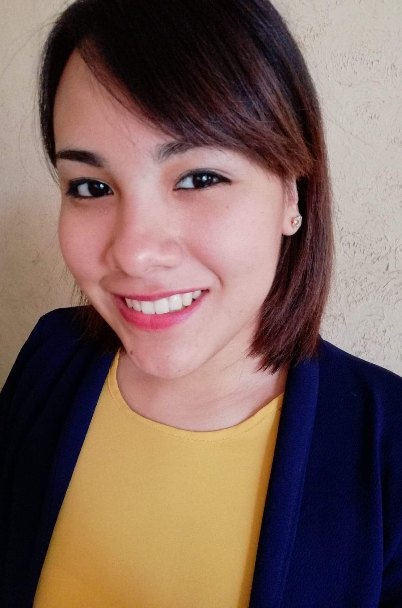

Hola, mi nombre es Yaneth Nava Velázquez, tengo 25 años y soy ingeniera química con especialidad en procesos sustentable, me gusta mucho el tema de eficiencia energética y el cuidado del medio ambiente
Mi nombre es Yaneth Nava Velázquez, tengo 25 años y soy originaria de Ciudad Valles, San Luis Potosí (parte de la huasteca potosina). Soy ingeniera química con especialidad en procesos sustentables egresada de la Universidad Autónoma de Nuevo León. Durante mi formación he tenido la oportunidad de participar en algunos congresos tanto como asistente como de ponente. Mi última participación de ponente fue en noviembre de 2021 y obtuve el reconocimiento al mejor e-Poster de la categoría. Además, he participado en algunos proyectos como el Verano de Investigación Jaguar en la Universidad Autónoma de Yucatán en Julio de 2019, realicé mi tesis en generación de energía en diciembre del mismo año, fui parte del proyecto Student Energy Leader Fellowship en octubre de 2020 y de este proyecto se creó una A.C. a la cual mi equipo y yo nombramos como YAESCO (Youth Association of Energy and Sustainable Cooperation) la cual estuvimos trabajando por un año y que en este momento se encuentra en pausa. Adicional a esto he seguido desarrollándome en mis estudios académicos, en octubre de 2021 gané una beca por parte de AES México y la REDMEREE para estudiar un diplomado en Business Analytics en el Tecnológico de Monterrey el cual tuvo fin en febrero de 2022. Actualmente estudio la Técnica en Desarrollador Web con la finalidad de poder enfocar mis conocimientos en el Análisis de Datos en el sector energético. Todos los conocimientos adquiridos los he podido poner en práctica en diferentes ámbitos y sigo encaminándolos para lograr mis objetivos dentro de la empresa en la que laboro actualmente. Me gustaría mucho poder compartir mis conocimientos con los jóvenes estudiantes para que puedan motivarse a estudiar una carrera en ciencias y tecnologías ya que considero que mi experiencia podría brindar un poco de empuje hacia lo que se puede hacer en el sector energético con las herramientas que brindan estas carreras